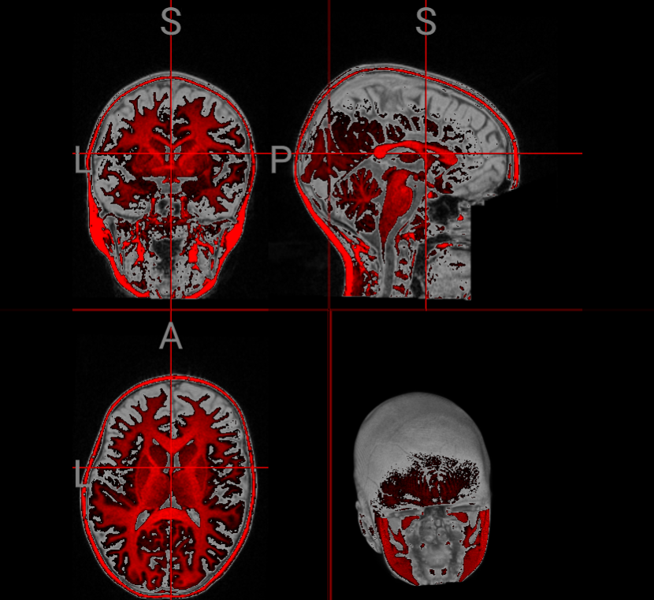
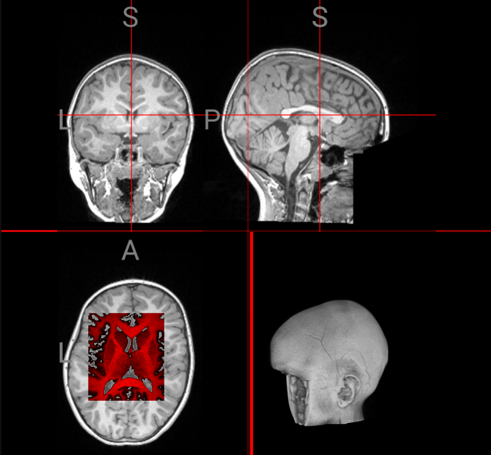

To experience real-time image processing in your webbrowser
Drag plugin to your bookmarks bar:
See for different examples of image processing performed with the WebGL Image Processor:


F.A.Q.
- What can be done with this tool?
- Currently Cornerstone2D.js and NiiVue.js. Others like openseadragon.js, slicedrop.com, Papaya are in the works! BrainChop we are coming for you - j/k :))))
- For which websites does it work?
- Any processing with any library is possible! The examples above use plotly.js or ONNX.js. BOOSTLETs provide methods that allow data access and interaction across different frameworks through JS injection. This is all client-side, unless you send some requests to a server.
- Which types of processing can be done?
- If the visualization framework supports it, we access the real data. If not, we fall back to canvas imagedata but we are working with the developers of the frameworks to fix that :)
- How can I develop my own processing algorithms?
- Check out the code for the examples above - there is always the top block that imports boostlet.min.js and then a run method for the processing. It is pretty straight forward (especially the sobel.js and plotly.js examples) and any library or processing is possible.
- How is the backend working?
- Fork the repo :) We use parcel.js as the build system. PRs are very welcome :)